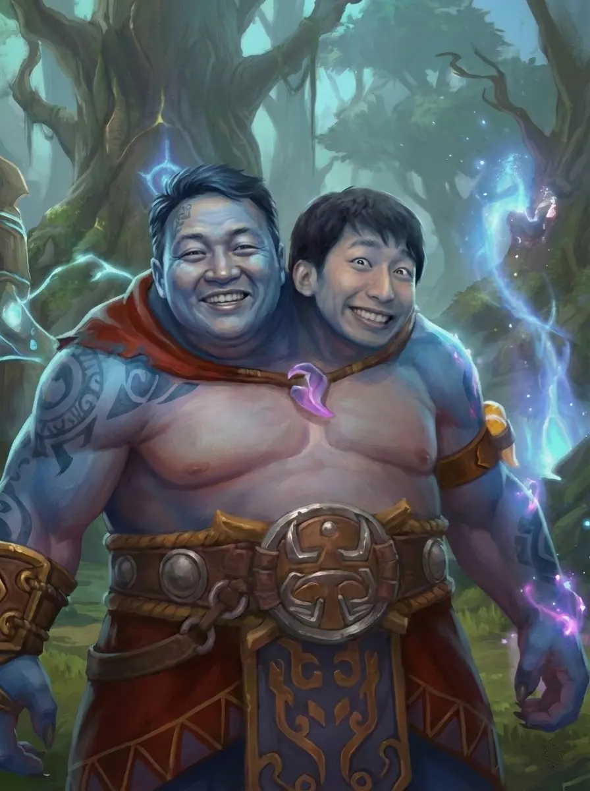
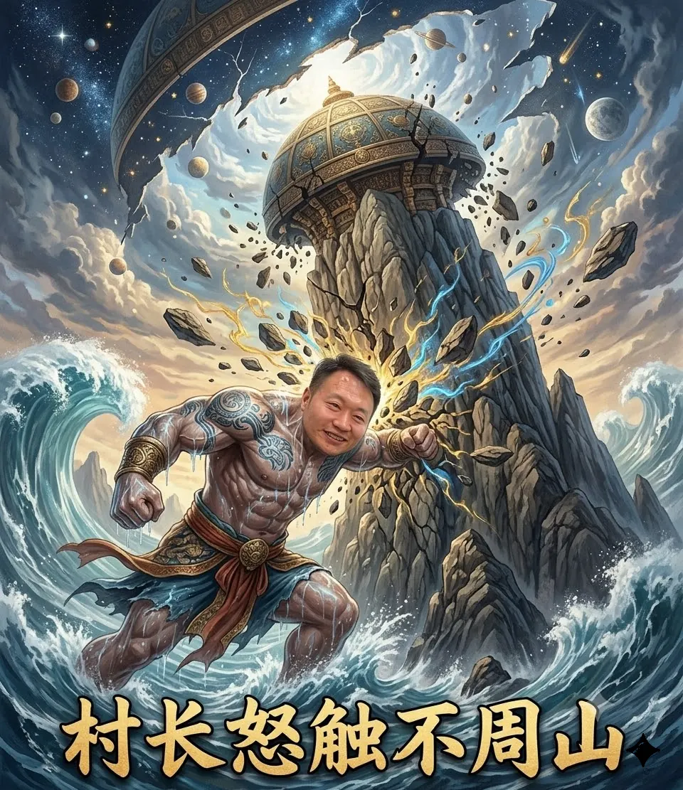

你可曾看到过凌晨4点的熊坑村，那里没有声音，只有一个又一个村干部默默的组团坑人。天梯排到我们熊坑村，你就等着享福吧！
无论是顺风局的稳健推进，还是逆风局的破釜沉舟，你都别怕，不到最后一刻，你永远不知道，这把村干部们会怎么坑你。但是别担心，坑是他们的，锅还得你来背！
大局当前，村委会做出重大牺牲，助力西恩刀塔重返荣耀！
“副村长，我命令你立刻站起来锤自己🥚🥚100下为TI15中国队加油，我知道这很难但这是命令。”
感谢你和副村长为TI15中国队做出的贡献。
熊坑村的核心骨干，指导村民磨砺前坑。
那些曾在熊坑村口口相传、甚至载入人类文明史册，影响世界发展的伟大壮举。
上古时期，熊坑村村长熊泽争夺创世坑神失败后，怒撞天地支柱不周山，导致“天倾西北，地陷东南”，世界大乱，地表出现巨坑，后在此建立熊坑村。

基于 OpenDota API 的实时数据 · 每2分钟自动刷新
上次更新：--
感谢你为反抗熊坑村贡献了宝贵的一票